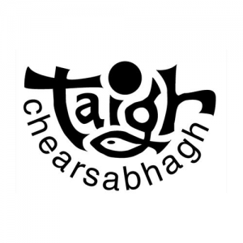
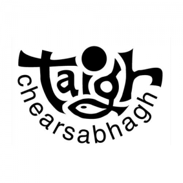

This project develops new art therapy and digital skills services for the islands of North Uist, Benbecula and South Uist. The program will support, enable and empower people by teaching new skills, building confidence, bringing together inter-generational groups to share skills and develop ideas.

 
